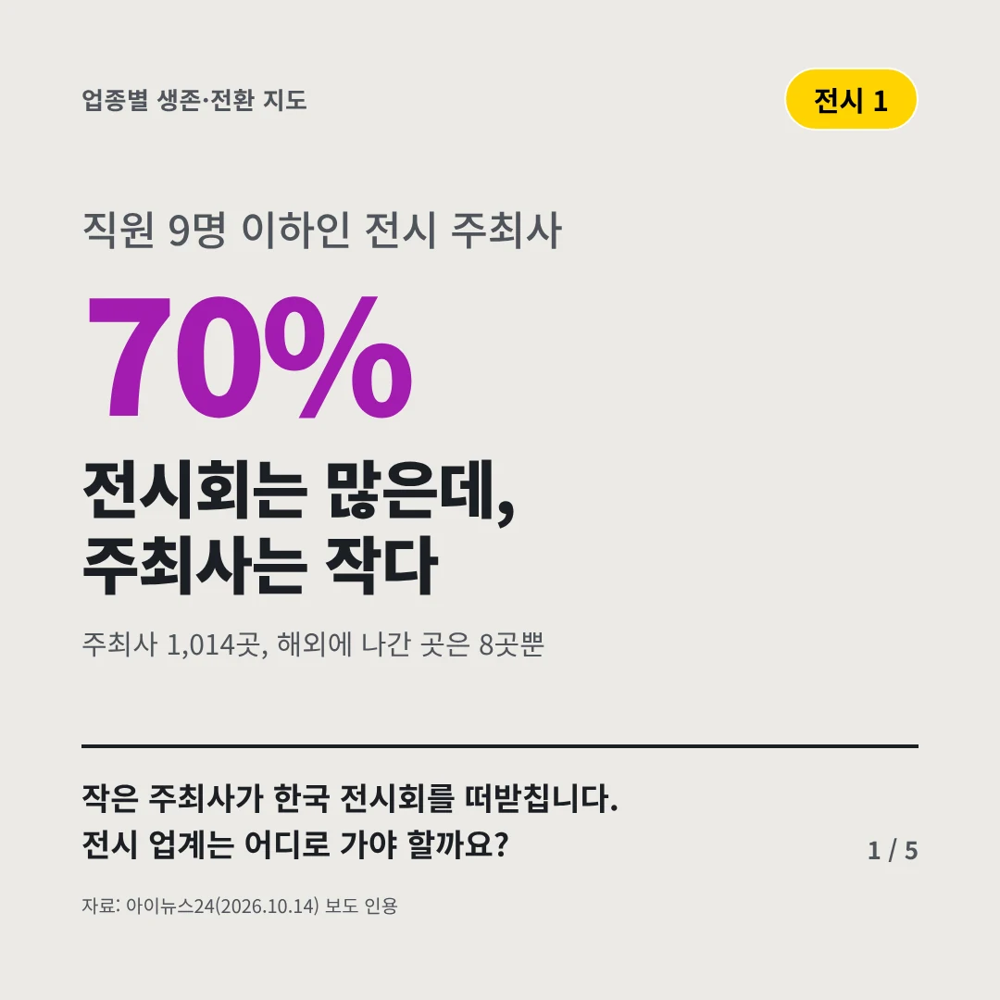
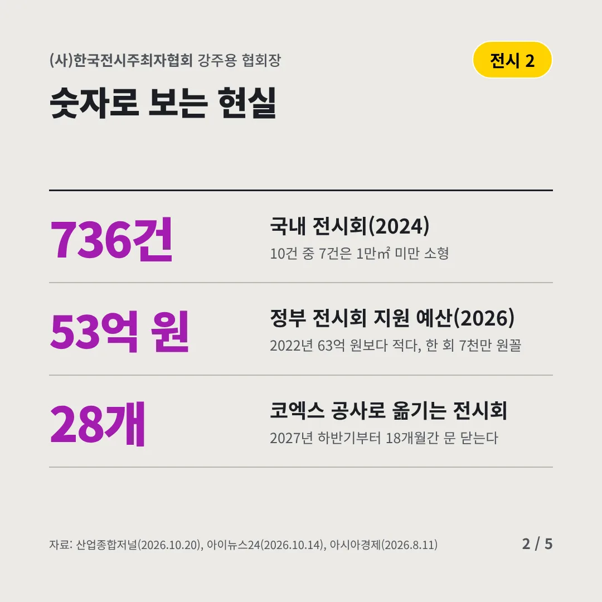
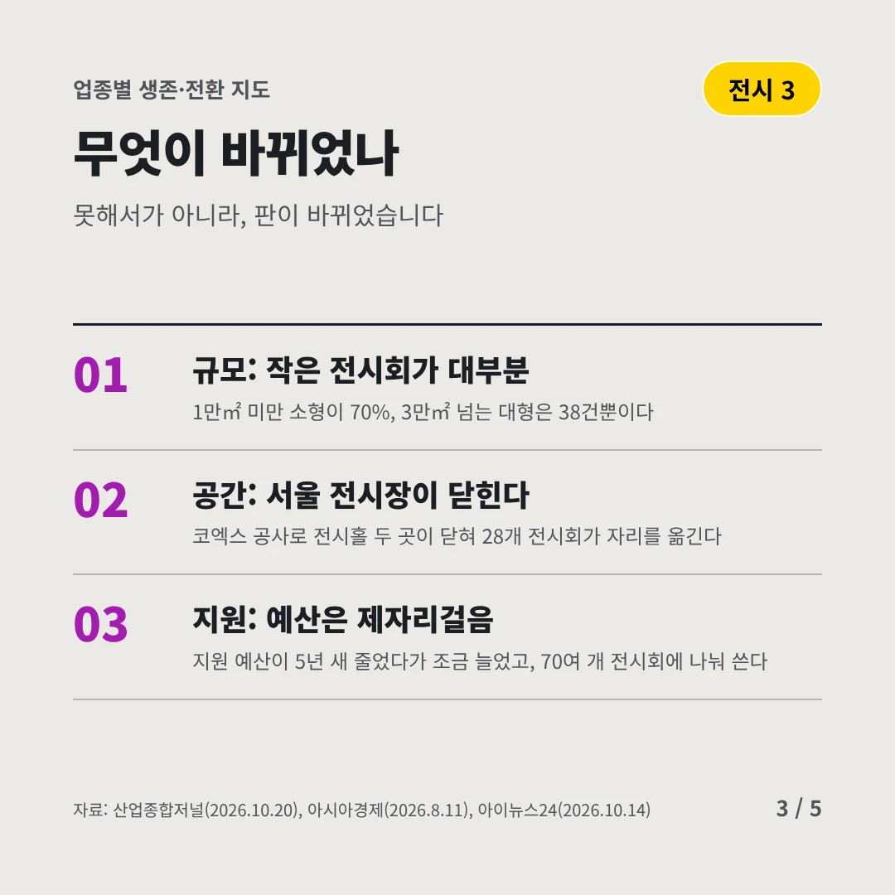
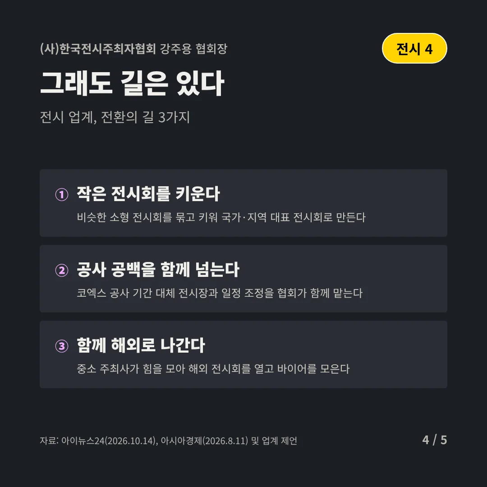
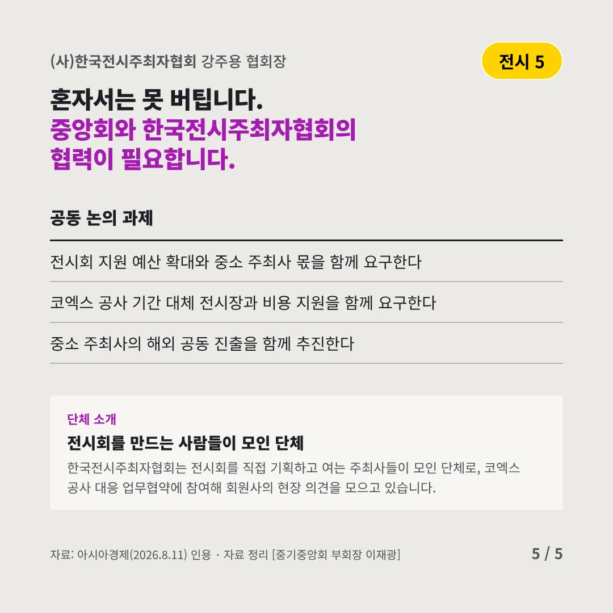
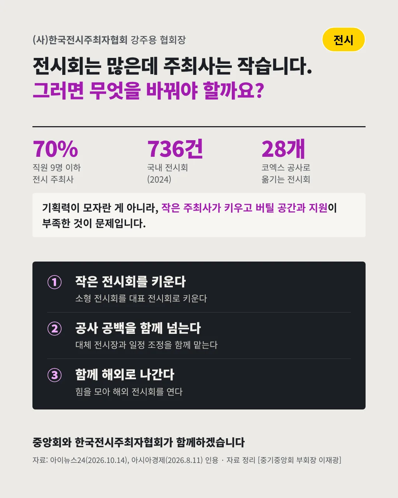

(사)한국전시주최자협회강주용 협회장
전시회는 많은데, 주최사는 작다
70% 직원 9명 이하인 전시 주최사






작은 주최사가 한국 전시회를 떠받칩니다. 전시 업계는 어디로 가야 할까요?
숫자로 보는 현실
- 736건국내 전시회(2024)10건 중 7건은 1만㎡ 미만 소형
- 53억 원정부 전시회 지원 예산(2026)2022년 63억 원보다 적다, 한 회 7천만 원꼴
- 28개코엑스 공사로 옮기는 전시회2027년 하반기부터 18개월간 문 닫는다
무엇이 바뀌었나
- 규모: 작은 전시회가 대부분1만㎡ 미만 소형이 70%, 3만㎡ 넘는 대형은 38건뿐이다
- 공간: 서울 전시장이 닫힌다코엑스 공사로 전시홀 두 곳이 닫혀 28개 전시회가 자리를 옮긴다
- 지원: 예산은 제자리걸음지원 예산이 5년 새 줄었다가 조금 늘었고, 70여 개 전시회에 나눠 쓴다
그래도 길은 있다
- 작은 전시회를 키운다비슷한 소형 전시회를 묶고 키워 국가·지역 대표 전시회로 만든다
- 공사 공백을 함께 넘는다코엑스 공사 기간 대체 전시장과 일정 조정을 협회가 함께 맡는다
- 함께 해외로 나간다중소 주최사가 힘을 모아 해외 전시회를 열고 바이어를 모은다
한 장 요약

단체 소개
한국전시주최자협회는 전시회를 직접 기획하고 여는 주최사들이 모인 단체로, 코엑스 공사 대응 업무협약에 참여해 회원사의 현장 의견을 모으고 있습니다.
자료: 아이뉴스24(2026.10.14), 산업종합저널(2026.10.20), 아시아경제(2026.8.11)